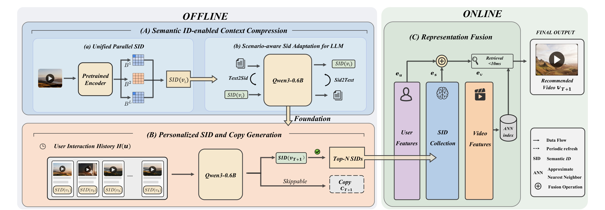
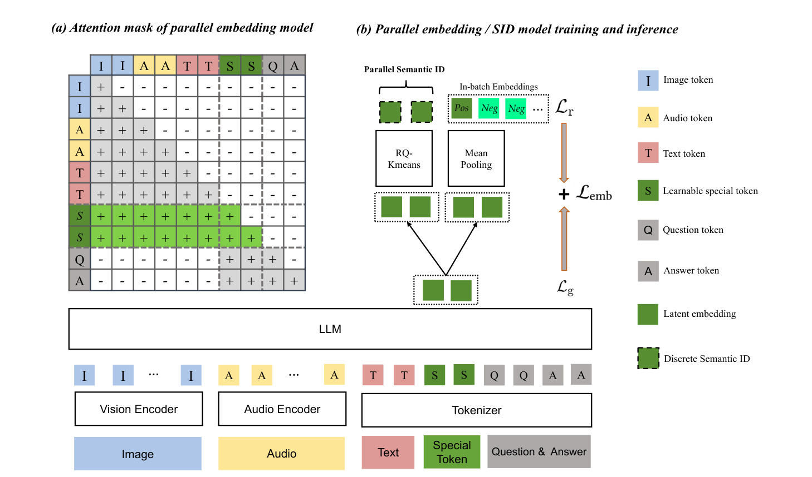
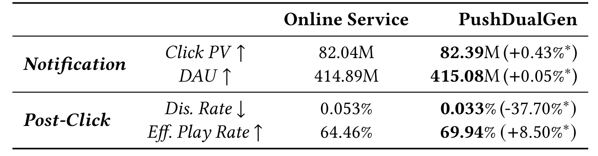
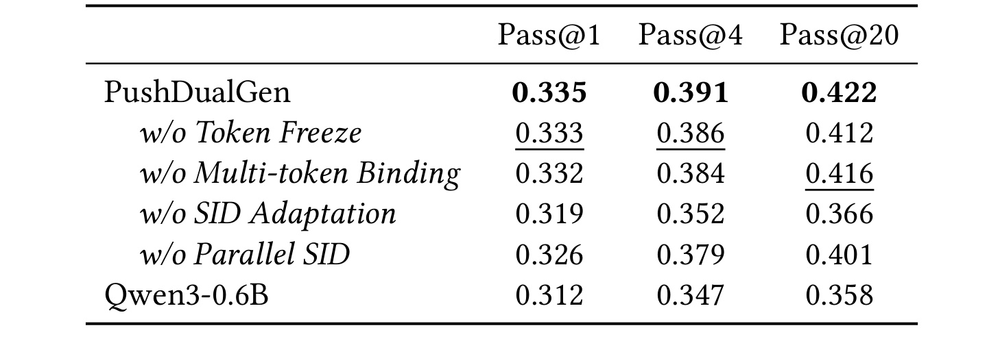
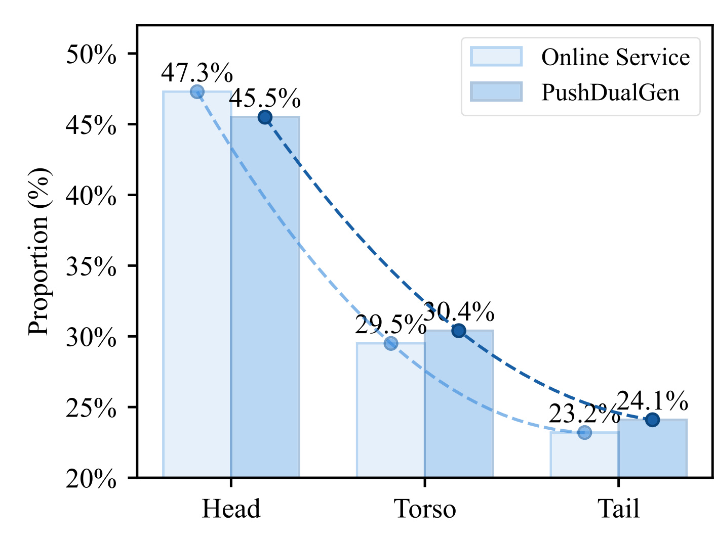
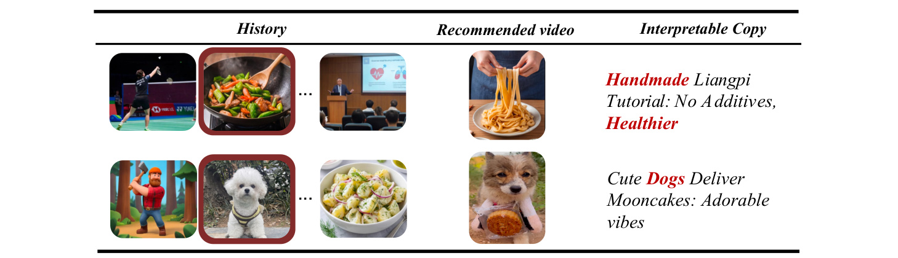

PushDualGen：面向工业推送的语义 ID 与可解释文案双生成
《PushDualGen: Enabling LLMs to Generate Semantic IDs with Interpretable Copy for Industrial Push Recommendation》由 Manjia Lin、Da Li、Yan Wang 等快手科技研究者完成，arXiv v1 于 2026 年 8 月 8 日提交，编号为 arXiv:2608.07989。论文研究的不是通用聊天生成，而是快手主动推送链路：模型先生成候选视频的 Semantic ID（SID），必要时再生成面向用户的 push copy。作者报告系统服务接近十亿用户、线上约 100K QPS；本轮没有在可核验来源中发现独立代码仓库。PDF 的 ACM Reference Format、会议名、ISBN、DOI 和版权年份仍含模板占位，因此本文只按 arXiv 预印本解读，不据此判断正式会议归属。
主动推送会在用户尚未打开应用时直接触达，任何错配都更容易触发不满，因此既要选得准，也要能追踪推荐逻辑；但在生成 SID 前追加完整思维链虽可给出理由，却带来难以满足工业 push 吞吐要求的额外解码成本。
1. 背景和问题
1.1 Push 的风险不是普通 feed 的等比例放大
Feed 推荐发生在用户已经进入应用、主动浏览内容之后；push 则由平台决定何时打断用户，并用极少的展示空间促使其重新进入应用。两者都要预测兴趣，但错误的代价结构不同：feed 中一次不相关曝光可能被快速滑过，push 的标题和通知会直接出现在系统通知面板，不相关、重复或夸张的内容更容易形成明确负反馈。因此论文把评价拆成两层：Click PV、DAU 衡量通知能否把用户带回平台，Dis. Rate、Eff. Play Rate 衡量点击后内容是否真正相关。只提高点击而恶化点击后满意度，并不能算成功。
传统 push 系统多由召回、打分、级联排序组成，每个候选视频保留原子 ID，模型分别估计点击或播放概率。生成式推荐改变了输出空间：视频先被量化为带语义的离散 SID，语言模型根据用户历史自回归地产生 SID，从而把用户建模和候选生成放进同一序列模型。OneRec 系列已经把这条路线推进到工业规模；OneRec-Thinking 又在 SID 前生成推理文字，让选择过程更可读。但推理文字会占用逐 token 解码时间，高 QPS push 如果每次都必须先走长 CoT，解释成本就进入推荐主路径。
PushDualGen 的核心改动是把顺序反过来：先输出直接决定视频的 SID，再把 copy 作为可以跳过的后续输出。 这并不等价于“免费解释”。训练仍需让 copy 与用户历史、目标 SID 对齐，要求解释的请求也要继续解码；真正被移除的是“不需要展示文案时仍为获得 SID 而被迫生成整段 CoT”的固定成本。论文的可部署性主张主要来自这种控制流分离，而不是使用更大的模型。实际 backbone 只有 Qwen3-0.6B，侧重低成本生成。
1.2 长历史、离散词表与量化误差构成三道接口问题
第一道问题是上下文长度。用户的 push-click 历史可能很长，直接塞入视频标题、描述或多模态 token 会迅速耗尽窗口；截断或随机采样又可能丢掉早期但稳定的兴趣。PushDualGen 用八 token SID 替代每个视频的长内容表示，把更多历史事件留在同一上下文中。这里的“压缩”首先是表示长度压缩，论文没有报告压缩前后平均 token 数、窗口覆盖率或信息损失曲线，因而不能从概念直接推导真实吞吐收益。
第二道问题是量化。常见 Residual Quantization 逐层量化前一层残差，深层 token 依赖前层误差；作者认为这种层级依赖会让后部 SID 更噪。已有并行 SID 研究虽避免逐层残差，却往往从单个 dense embedding 派生多个 code。PushDualGen 借鉴 CREM 的并行压缩表示，为每个视频学习八个 embedding slot，每个 slot 由独立 K-means codebook 量化。这样各 token 不是同一向量的层级残差，而是来自并列语义槽。
第三道问题是语言模型接口。K-means 的 codebook index 不在 Qwen 原始词表中；把编号注册成随机初始化特殊 token，并不意味着模型知道它和视频内容、push 文案之间的关系。论文必须先用 Text2SID 与 SID2Text 双向任务做场景适配，再训练用户级推荐。这个阶段在消融中也是影响最大的模块：去掉它后，Pass@20 从 0.422 降至 0.366。由此看，论文真正的技术主线不是简单“把 ID 当 token”，而是建立多模态视频表示、离散 SID、文本语义和用户历史之间可训练的接口。
最后要区分“可读 copy”和“忠实解释”。copy 在训练上条件于历史和已预测 SID，读者可以检查它说了什么；但论文没有用反事实、忠实性或人工标注实验验证这段文字是否揭示模型实际选择 SID 的因果理由。因此 PushDualGen 提供的是可审计的伴随文本输出，而不是已经证明忠实的模型内在推理。 这一区分对主动触达尤其重要，因为错误理由也可能强化误导性通知。
2. 方法
2.1 并行语义 ID：把长行为历史压成八槽离散序列
端到端流程有三个阶段。阶段 A 离线把每个视频编码成 Parallel SID，并让 Qwen3-0.6B 学会 SID 与场景文本的双向转换；阶段 B 使用任务指令、用户画像、带时间新近性标记的交互历史，先生成下一视频 SID，再按需继续生成 copy；阶段 C 将模型产生的 Top-N SID 偏好表示接入既有在线特征与 ANN 检索。离线表征周期刷新，线上仍保留判别式用户/视频特征；生成式模型提供额外偏好信号，而不是把原级联系统整体替换掉。

Figure 1 的左上角先把视频送进预训练 encoder，并输出多个并行槽，再将槽量化成 SID。中间的 Text2SID/SID2Text 不是用户级推荐，而是给离散 token 注入 push 场景语义的适配阶段。左下角才是真正的个性化生成：历史中的视频已由 SID 表示，Qwen3-0.6B 输出目标 SID 后形成 Top-N SID 集合；虚线框 copy 位于“Skippable”分支，说明服务不要求每次完成文本解码。右侧线上模块分别编码 User Features、SID Collection 与 Video Features，融合后的用户侧表示查询 ANN index，图中将检索部分标成小于 10ms。这个时延标注只覆盖图示 retrieval 方框，论文没有把 SID 生成、特征更新和 copy 解码合并成端到端延迟表，不能解释成整条链路都低于 10ms。设视频在第 m 个并行槽的连续向量为 e^(m)(v)，对应 codebook 有 K 个质心，逐槽最近质心给出 token：
符号解释：m 表示并行语义槽，K 是每个槽的聚类数，e^(m)(v) 是视频 v 的第 m 个槽向量，c_k^(m) 是该槽 codebook 的第 k 个质心。每个槽独立做 K-means，因此不存在“后一 token 量化前一层残差”的递归路径；代价是槽之间的互补性主要依赖上游表示学习，普通 K-means 本身并不保证八个槽各司其职。这些独立选择再按固定槽顺序拼接为最终 SID：
符号解释：M 是并行槽数，论文实现取 M=8，每槽 K=512。理论组合空间达到 512^8，但这不表示实际内容均匀覆盖整个空间；碰撞率、codebook 利用率和槽间互信息都未报告。工程上真正有用的是每个视频可由八个离散 token 表示，长历史便能用短而结构化的序列输入生成器。附录说明这八个槽来自 Qwen2.5-Omni-3B：模型在图像、音频、文本及问答输入前加入八个可学习 compression token，同时服务检索与文案生成表示；其检索目标是 batch 内 InfoNCE：
符号解释：B 为 batch size，(q_i,p_i) 是匹配的 query-passage 对，sim 是相似度函数，tau 是温度。该目标促使匹配内容在连续表示空间接近，为后续检索和聚类提供可分性；batch 内负例如果含潜在同兴趣内容，仍可能把语义相近样本错误推远。同时，生成侧使用标准自回归目标：
符号解释：T_i 是第 i 个样本的目标长度，x_(i,t) 是第 t 个 token。它让压缩表示保留足够信息以继续生成文本，而不只满足向量检索；论文没有单独消融这个生成目标，因此无法量化它对最终 SID 推荐的独立贡献。检索与生成两项目标最终线性组合：
符号解释：lambda 在 0 到 1 之间，在检索判别性和生成信息保真之间权衡。论文未披露 lambda 的取值与敏感性，复现时不能默认任意权重都能得到同样的并行槽结构；如果某一目标长期占优，八个压缩 token 可能更适合单一任务，而不能稳定兼顾后续检索、文案生成和 K-means 离散化。

Figure 4(a) 展示注意力可见性：图像、音频和文本 token 保持多模态编码路径，绿色的可学习特殊 token 聚合前序内容；问题与答案又有自己的自回归可见区。图 4(b) 把八个 compression token 的连续表示分成两条训练信号，一条参与 batch 内正负样本对比，另一条经 mean pooling 支持文本生成，二者共同形成 L_emb。上方绿色虚线方块再经逐槽聚类变成离散 SID。图中标注“RQ-Kmeans”与正文“独立 K-means”略有术语张力，但正文及附录最后明确实际使用 M=8 个 slot-specific codebook；因此本笔记按公式和实现描述理解为逐槽独立离散化，而不把图中文字扩展成未说明的多层残差量化。
2.2 双向场景适配：Text2SID 与 SID2Text 共同建立语义接口
注册 L×K 个 SID 特殊 token 后，Qwen3-0.6B 仍只看到随机 embedding。适配阶段把视频的 push copy c_i、描述 d_i 和 SID 放进两个对称任务。Text2SID 从文字预测离散序列，把 push 场景相关的信息压进 SID token；SID2Text 从 SID 重建 copy 与描述，迫使 SID embedding 支持可读语义。两方向写成：
符号解释：s_il 是视频 v_i 在第 l 个 codebook 的 SID token，c_i 是 push 文案，d_i 是视频描述，G 为 Qwen3-0.6B 生成器，方向控制 token 指示映射任务。双向并不保证严格可逆：一个 SID 可对应多种合理文案，同一描述也可能映射到多个语义相近视频；它建立的是共享语义接口，而非一一编码。两个方向都按 next-token prediction 优化：
符号解释：x 是某一方向的输入，y_m 是目标序列第 m 个 token。适配时冻结原始词表 embedding，只更新 SID token embedding，意图是在不扰动语言能力的前提下学习新离散词。这里的 M 在公式中表示目标 token 数，与并行槽数语境重合；读者应按目标序列长度理解求和范围。冻结策略在 Table 2 中只有小幅收益，说明它更像稳定化选择，而非主要能力来源。
2.3 先 SID 后 Copy：决策主路径与可选解释解码
个性化阶段输入 X(u) 包含任务指令、用户画像、历史 SID 和时间新近性标记。此时模型不再恢复任意视频文本，而是学习在具体用户上下文中选择下一视频；第一段输出严格限定为目标视频的 L 个 SID token，完整 SID 形成后才允许进入文案分支：
符号解释：u 是用户，T+1 表示待推荐的下一视频，s_(T+1)^l 是其第 l 个 SID token，s_(T+1)^(<l) 是已生成的 SID 前缀。这个损失直接训练推荐决策；即便停止后续 copy 解码，完整 SID 仍可进入候选链路。若需要文案，SID 后插入特殊分隔 token，再让模型条件生成 copy：
符号解释：t_j 是目标 copy 的第 j 个 token，条件同时包含用户输入、已经决定的视频 SID、分隔 token 和文案前缀。顺序非常关键：copy 无法反过来拖延 SID 的首段生成；但若线上要真正展示 copy，仍需承担后续文本解码、内容安全和事实性审核成本。训练时两项损失仍按加权和共同优化：
符号解释：lambda_Copy 控制推荐正确性与文案学习的相对强度。论文没有给出该权重或敏感性；若权重过大，文本易生成不代表 SID 预测更准，若过小，copy 可能退化为泛化模板。Multi-token Binding 进一步把高频二至四元 n-gram 及 SID 等语义原子合成单 token，新 embedding 由组成 token 均值初始化，目标是降低长文本训练成本。它在消融中提升较小，且论文未报告压缩率、训练吞吐或词表膨胀，因此目前只能确认其对 Pass@k 有弱正贡献。
2.4 表示融合：生成式偏好信号接入既有 ANN 检索
模型基于 click history 学习，但点击只覆盖用户兴趣的一部分，浏览、评论等异构特征仍由原线上系统掌握。PushDualGen 因而不直接把生成 SID 映射成最终视频，而是用三个 encoder 分别得到 d 维用户特征 e_u、候选视频特征 e_v 和 Top-N SID 集合特征 e_s。实际取 N=20，再融合用户与生成信号：
符号解释：e'_u 是进入 ANN 检索的融合用户向量，应用中 alpha=beta=1。等权相加的优点是接入简单，生成模型可补充原用户向量未覆盖的兴趣；风险是两种向量若未校准尺度或出现冲突，固定权重缺少按用户、场景和置信度自适应的能力。候选仍以 e'_u 对视频集合 e_v 做 ANN 搜索，所以 SID 生成更像一条新的用户侧偏好通道。训练与推理的边界由此清楚：Qwen2.5-Omni-3B 的视频压缩和双目标表示学习离线执行，Qwen3-0.6B 先做双向 SID 适配，再用每天约 3.6B token 的 click log 增量训练个性化生成；在线取得 Top-20 SID 表示后，与现有特征融合并检索，copy 仅在需要时继续生成。这个架构保留了工业系统可回退的旧链路，但论文没有公开 SID 刷新频率、在线缓存、模型并发资源、容灾或生成非法 SID 的约束解码细节，复现者不能只凭公式还原完整 serving。
3. 实验结果
3.1 数据、训练配置与线上 A/B 主结果
表示学习阶段从内容池采样超过 400 万视频，过滤多类内容后形成约 0.72B token 的语料；Qwen2.5-Omni-3B 加八个 compression token 生成并行表示。SID 适配与个性化生成都以 Qwen3-0.6B 为 backbone：前者学习率 (1\times10^{-5})、训练 3 epoch，后者学习率 (1\times10^{-7})、训练 1 epoch。用户级部分每天使用约 3.6B token 的 push-click 增量日志。论文未披露 batch size、优化器、硬件、训练时长、codebook 重建周期或离线 train/validation 切分，因此这些数字足以理解规模，却不足以独立复现。
线上实验持续 14 天，分配平台 15% 流量，覆盖约 1.5 亿用户；流量在 PushDualGen 与基于级联 pipeline 的原线上服务之间等分。作者使用 CUPED 缓解 hash 分流可能带来的前实验不平衡，并在 Table 1 用星号标出 (p<0.05) 的变化。论文没有报告实验单元、方差、置信区间、多重检验校正和样本量计算；大样本会让很小的差异也可能显著，因此必须同时看效应大小与指标方向。

Table 1 的 Notification 组体现“能否拉回用户”：Click PV 从 82.04M 到 82.39M，作者报告相对提升 0.43%；DAU 从 414.89M 到 415.08M，相对提升 0.05%。后者效应很小，即使有显著性星号，也不应被描述成用户规模发生巨大变化。Post-Click 组更强：Dis. Rate 从 0.053% 降至 0.033%，绝对下降 0.020 个百分点，对应相对下降 37.70%；Eff. Play Rate 从 64.46% 升至 69.94%，绝对增加 5.48 个百分点，对应相对提升 8.50%。四个方向一致，说明收益不只是诱导点击，点击后播放和负反馈也改善；但表中没有单独比较“只生成 SID”与“SID+copy”在线分支，因此不能把全部线上增益归因于解释文案。
论文在引言中还称系统服务接近十亿用户、约 100K QPS。这是部署规模描述，不是 Table 1 实验的同期流量细节。Figure 1 的检索方框标注小于 10ms，却没有生成 token 数、首 token/完整 SID 延迟、copy 延迟、GPU 成本和 QPS 压测表。故“轻量”目前由 0.6B backbone、可跳过 copy 与部署事实共同支撑，缺少与 OneRec-Thinking 的同硬件延迟对照。
3.2 SID 预测消融：语义适配比训练技巧更关键
离线消融将任务设为 SID prediction，用 Pass@k 衡量从 (k) 次独立采样中至少一次命中用户感兴趣视频 ground-truth SID 的概率。它验证生成器是否能从历史预测目标离散序列，不等同于线上 Click PV 或满意度。变体分别把 Parallel SID 换成 OneRec SID、删除 SID Adaptation、删除 Token Freeze 或删除 Multi-token Binding，并重新训练。

Table 2 中完整 PushDualGen 的 Pass@1/4/20 为 0.335/0.391/0.422，三列均为最佳。最显著的退化来自去掉 SID Adaptation：0.319/0.352/0.366，Pass@20 绝对下降 0.056；这与方法动机一致——Qwen 预训练从未见过这组随机注册的 codebook token，仅靠用户级监督很难建立稳定语义。去掉 Parallel SID 后为 0.326/0.379/0.401，优于原始 Qwen3-0.6B 的 0.312/0.347/0.358，却仍低于完整模型，说明并行槽有独立增益。Token Freeze 与 Multi-token Binding 的差异更小：去掉后分别为 0.333/0.386/0.412 和 0.332/0.384/0.416，支持“训练稳定/效率优化”而非决定性模块的定位。表没有误差条、随机种子和显著性检验，也没有将 Parallel SID 与相同 token 预算的多种量化器系统比较，因而不能判断小幅差异是否稳健。
这张消融表还暴露一个证据缺口：作者把长上下文压缩作为重要动机，却没有报告历史覆盖长度、输入 token 节省、SID 碰撞、codebook 使用率或长短历史分桶结果；把 Multi-token Binding 称为降低计算成本，也没有给训练吞吐与显存。离线证据证明各模块对 SID 命中有正向关联，但没有直接拆出“压缩更多历史”究竟贡献多少。
3.3 内容生态：曝光从 Head 向 Torso/Tail 小幅移动
快手视频被自动划入 39 个内容类别。作者按类别占总曝光的份额分组：大于 5% 为 Head，1% 至 5% 为 Torso，小于 1% 为 Tail。该分法衡量类别曝光集中度，而不是单视频流行度；“Tail 获得更多曝光”表示尾部类别合计份额增加，不能推出每个长尾创作者都受益。

Figure 2 显示 Head 从 47.3% 降至 45.5%，Torso 从 29.5% 升至 30.4%，Tail 从 23.2% 升至 24.1%。总量上是约 1.8 个百分点从 Head 移出，Torso 与 Tail 各增加 0.9 个百分点，分布确实更平缓。作者把它解释为生成 SID 具备比原线上服务更好的泛化与冷启动能力，但图中没有置信区间、观察周期、曝光总量、类别质量或用户满意度分桶，也没有控制供给结构同时变化。图中纵轴从 20% 起始，会放大柱高的视觉差距，因此判断应以标注数值而非面积观感为准。它能支撑“曝光份额重新分配”，尚不能单独证明内容生态长期改善、创作者供给增长或公平性提升；尤其是主动 push 增加尾部内容曝光，还需同时监测打扰和负反馈是否在类别间异质。
3.4 定性文案与未覆盖的解释忠实性
论文保留 SID-to-text 能力，并在推荐 SID 后继续生成 copy，以便观察 SID 包含的语义及推荐逻辑。Figure 3 只给出两名代表用户，没有人工评分、自动一致性指标或大样本错误分析，因此它的作用是展示输出形态，而非完成解释性评测。

第一行历史同时包含羽毛球、菜肴和演讲等内容，推荐手工凉皮视频，copy 强调“手工、无添加、更健康”，红色词把菜肴历史与目标文案联系起来；第二行历史包含游戏人物、狗和凉菜，推荐小狗送月饼，文案把 dogs 作为显式关联。案例说明模型能在单次点击和整段历史中提取可读主题，也说明 copy 并非简单复述视频标题。然而读者无法从两例判断模型是否忽略了更强兴趣、是否偶然生成正确关键词、是否会幻觉视频属性，或 copy 是否真的对应产生 SID 的内部证据。若把文案用于真实通知，还必须评估夸张措辞、事实错误、敏感属性推断和用户隐私暴露。
综合线上、离线和案例证据，最强结论是：在快手既有 push 系统中接入这种生成偏好信号后，四个线上指标方向一致且作者标注显著，SID 适配在离线消融中贡献最大，曝光分布向 torso/tail 小幅移动。较弱结论是：Parallel SID 相比本文所选替代方案更好，但量化对照不充分；copy 能给出可读联系，但未验证忠实性；可选解码有明确控制流优势，但缺乏端到端延迟与成本表。短论文用真实大规模 A/B 补足了应用可信度，却把很多复现与机制诊断留给后续版本。
4. 总结
4.1 我的判断
PushDualGen 最有价值的设计不是再发明一套完整推荐栈，而是把生成式推荐拆成两个不同服务等级：SID 是必须尽快得到的决策载体，copy 是需要时再付费的可读输出。先 SID 后 copy 让解释不阻塞推荐主路径；Top-N SID 又通过简单向量融合接回原 ANN 链路，保留工业系统已有特征和回退能力。在线结果中，Eff. Play Rate 绝对提升 5.48 个百分点、Dis. Rate 绝对下降 0.020 个百分点，比 Click PV 与 DAU 的小幅变化更有业务含义，因为它们指向点击后质量而非仅提高通知吸引力。
技术上，Parallel SID、双向适配和用户级生成形成清晰的三层接口：多模态视频先变成八个并行槽，槽再离散成词表 token，Text2SID/SID2Text 给 token 注入场景语义，最后用户历史监督决定下一 SID。消融证明适配不可少，却尚未充分证明并行量化为何优于更强 codebook 方案。因而这篇论文更像一份有价值的工业系统短报告：部署规模和线上 A/B 很强，公开方法细节足以理解主线，但不足以无歧义复现。
4.2 局限与风险
- 发表元数据未完成。 ACM 会议名、年份、ISBN 与 DOI 仍为模板占位；当前只能确认 arXiv v1，不能把模板文字当作正式录用信息。
- 线上统计披露不完整。 Table 1 给出绝对值、相对变化和 (p<0.05) 星号，但缺少置信区间、方差、实验单元、多重检验和分桶异质性；CUPED 的协变量与前实验窗口也未说明。
- 效率证据不闭环。 约 100K QPS 和 retrieval <10ms 说明系统规模，却没有 SID 生成、copy 生成、全链路 P50/P95/P99、GPU 用量及与 OneRec-Thinking 的同硬件对照。
- 解释不等于忠实。 两个定性案例只证明 copy 可读，未验证文字与 SID 决策的因果一致性，也未覆盖幻觉、诱导点击、敏感属性和内容安全。
- 量化与压缩诊断不足。 没有 codebook 利用率、碰撞率、历史覆盖长度、token 压缩率、槽互补性和更强量化 baseline；八槽独立 K-means 的优势仍主要由单一 Pass@k 表支撑。
- 生态结论偏早。 Head/Torso/Tail 曝光变化是截面分布证据，未报告长期创作者留存、供给质量、用户分群和类别级负反馈，不能直接升级为公平或长期健康的因果结论。
4.3 复现与后续跟进
- 先做可控的 SID 子实验：复现八槽 (K=512) 独立 K-means，与 residual SID、单 embedding 并行 code 和共享 codebook 对照，同时记录 Pass@k、碰撞率、codebook perplexity、历史 token 数与冷启动分桶。这样才能判断收益来自并行表示、量化方式还是上下文覆盖。
- 将 serving 指标拆成视频 SID 刷新、Qwen3-0.6B 首 token、完整八 token SID、Top-20 采样、表示融合、ANN、可选 copy 六段，报告 P50/P95/P99 与单位请求 GPU 成本；并在同硬件上与 OneRec-Thinking 比较，直接验证“可跳过解释”节省多少。
- 给 copy 增加忠实性评测：遮蔽或替换历史事件，检查文案关键词和 SID 是否按预期变化；再由人工标注可读性、事实性、诱导性和敏感属性泄漏。只有文案对决策证据稳定，才适合称为解释。
- 延长生态观察并做用户/类别分桶：同时追踪长尾曝光、有效播放、负反馈、通知关闭、创作者留存与新增供给，避免把短期曝光搬移误认为长期生态改善。
总体而言，PushDualGen 给出了一个值得借鉴的工程原则：将低延迟必需的结构化决策与高成本、可选的自然语言输出解耦，再把生成信号以可回退的方式融合进成熟检索系统。 它已经提供大规模在线有效性的强信号，但解释忠实性、量化诊断、端到端效率和长期生态因果仍需更完整的后续证据。